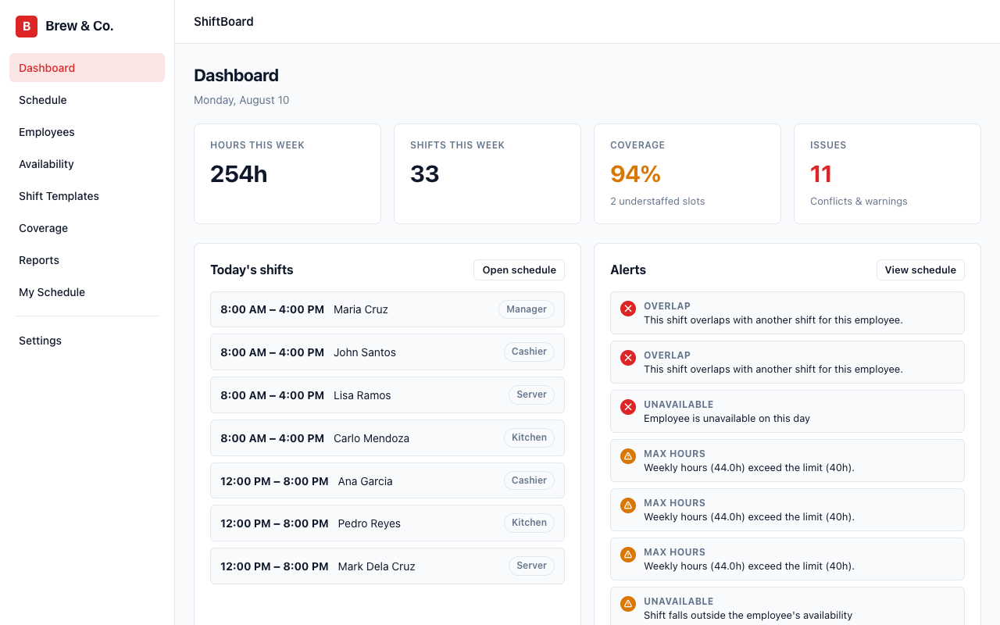
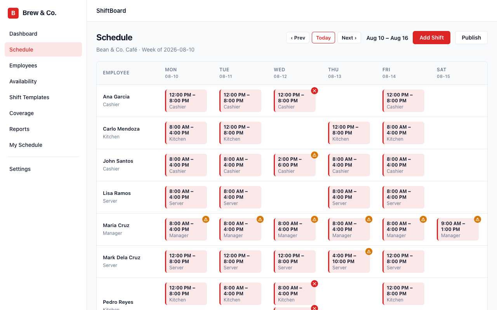
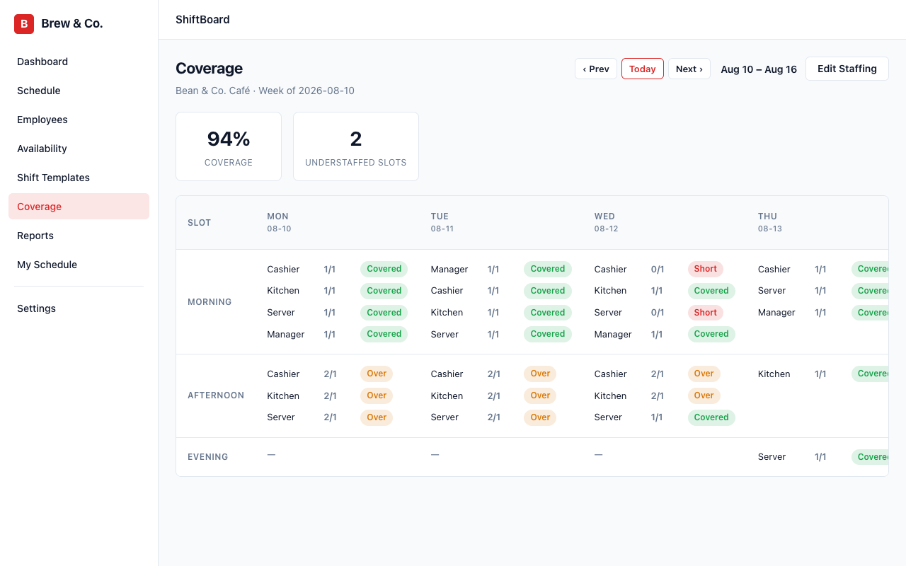
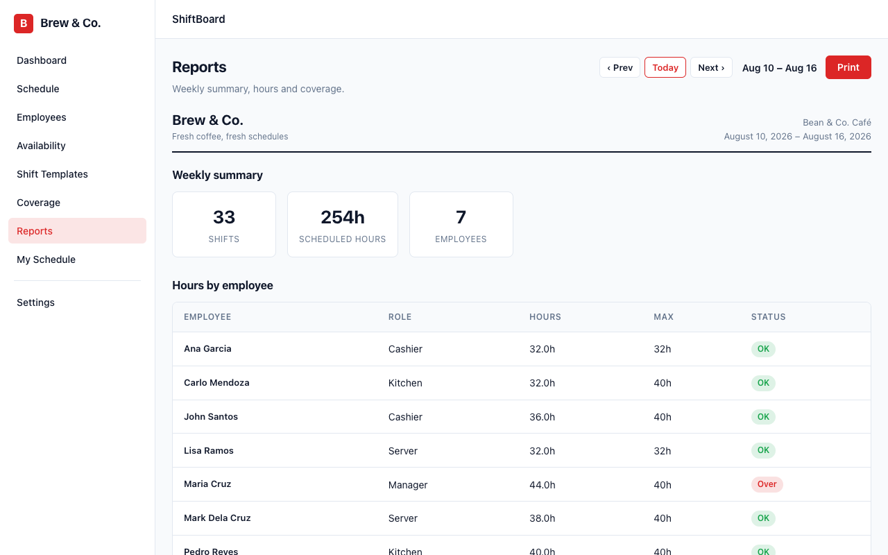

ShiftBoard
A local-first employee scheduling app for planning weekly shifts, checking availability and coverage, publishing the schedule, and handing it to the team — built for the web with React, TypeScript, and IndexedDB.
Problem
Growing teams often build weekly schedules in spreadsheets or chat threads. Overlaps, unavailable staff, max-hour breaches, and thin coverage only show up after the week is already published — and fixing them means another round of messages.
Solution
ShiftBoard puts the weekly roster in one focused web app. Managers assign shifts on a grid, apply templates, and see conflicts and coverage gaps as they work. Availability and staffing requirements feed a pure scheduling engine that flags overlaps, rest-period issues, and understaffed slots before publish. Employees can preview their week in My Schedule, and reports summarize hours and coverage for print. Built as a local-first React prototype, ShiftBoard stores everything in IndexedDB so it works without a backend — with export/import for backups and a white-label branding layer for demo company identities.
Architecture
ShiftBoard is a local-first React SPA. Feature screens for
dashboard, schedule, employees, availability, templates, coverage,
reports, and settings share one domain model. Pure functions in
core/ evaluate overlaps, availability, weekly hours,
rest periods, and coverage — with no React or Dexie imports — so
the engine stays unit-testable. Typed repositories wrap Dexie /
IndexedDB; Zustand holds only ephemeral UI state such as week
offset.
HashRouter keeps deep links working on static hosts. Demo seed data loads on first launch with intentional schedule issues so the conflict and coverage UI is easy to explore. The white-label layer maps brand name, colors, and typography onto CSS variables at boot. The app deploys to GitHub Pages as a static Vite build.
Product surfaces
Scheduling engine
Local-first storage
Shell · Delivery
Technologies
- React
- TypeScript
- Vite
- React Router
- Dexie
- IndexedDB
- Zustand
- Vitest
- GitHub Pages
Screenshots
Dashboard alerts, weekly schedule grid, coverage matrix, and hours report from the live demo (Brew & Co. branding).




Demo video
A quick walkthrough of ShiftBoard across dashboard, schedule, coverage, reports, and employees.
Live app
Try the local-first prototype in the browser — demo data loads on first visit so you can explore conflicts, coverage, and publish without signing in.